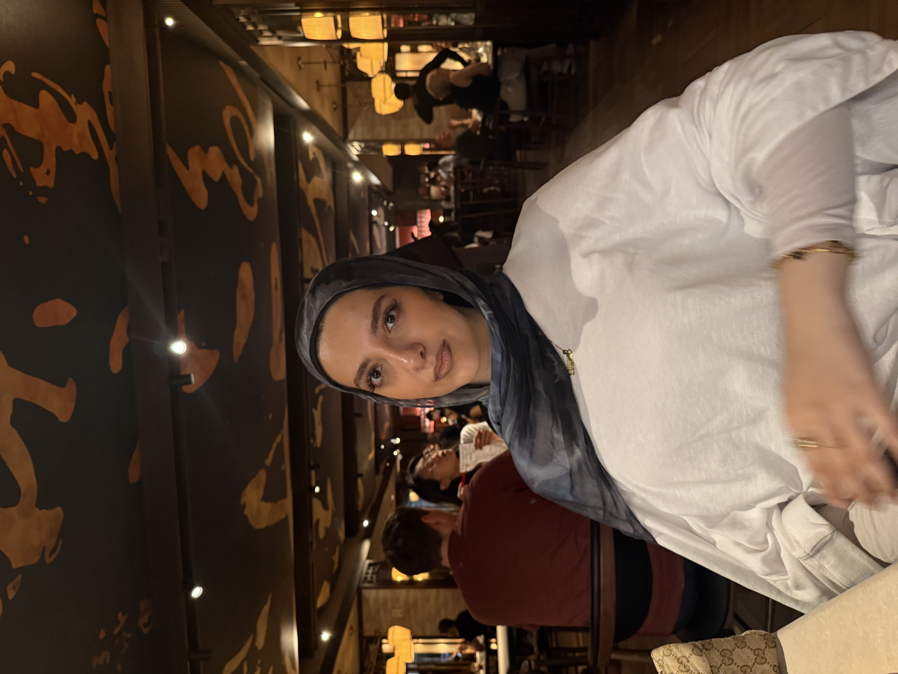

Tanya Abu Kamal - Personal Web Page ♡ Tanya Abu Kamal ♡
CSIT.100.04
September 21, 2026

♡ About Me ♡
Hi! My name is Tanya Abu Kamal. I am a senior at Montclair State University majoring in Biology with a minor in Public Health. Throughout my college experience, I have enjoyed being involved on campus, helping other students, and gaining experiences that connect to my interests in science, healthcare, and working with people.
I am currently a tutor through the Center for Academic Success and Tutoring (CAST) at Montclair State University, where I enjoy helping other students understand their coursework and feel more confident academically. I also work as a medical assistant at a doctor's office in Clifton, which has given me experience in a healthcare environment and allowed me to interact with patients and healthcare professionals.
Outside of academics and work, I enjoy expressing my creativity through makeup and hair. I also love Dabke dancing and being part of the Dabke Club community at Montclair State. Being involved in these activities has given me opportunities to build leadership, communication, teamwork, and interpersonal skills.
♡ My Biography ♡
| Category | Experience |
| Education | Senior at Montclair State University - Biology Major, Public Health Minor |
| Leadership | President of the Dabke Club at Montclair State University |
| Tutoring | CAST Tutor at Montclair State University |
| Healthcare | Medical Assistant at a doctor's office in Clifton |
Name: Tanya Abu Kamal
University: Montclair State University
Major: Biology
Minor: Public Health
Email: abukamalt2@montclair.edu
♡ Thank You for Visiting My Page! ♡
Created by Tanya Abu Kamal